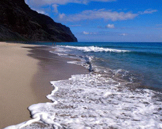

| His work on the ability of
fractal drums to damp
vibrations led Bernard Sapoval to suggest a mechanism responsible for the fractal
form of coastlines. |
| The very small features of coastlines cause turbulence to start at low velocities. Sapoval
concludes |
| |
"the reason why fractal coastlines exist is precisely because they are best at
damping ... waves. As the coast damps down the waves, then the erosion to which it is
subjected is reduced. They are thus stabilized by their fractal structure." |
|
|
| In effect, the fractal nature of the coastline evolves to maximum
efficiency at damping wave action, so continued wave action is not able to induce
qualitative changes in the coastline. |
 |
 |
|
| The same forces sculpt coastlines on many scales. |